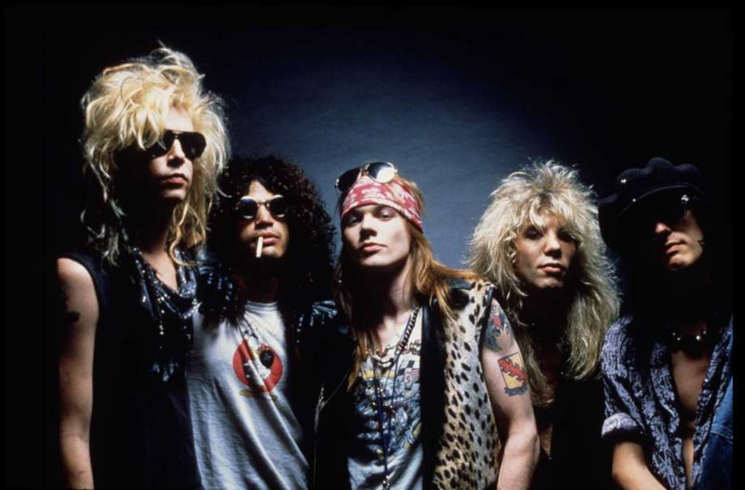
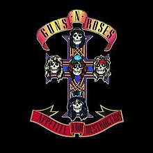

Es una banda de rock estadounidense formada en 1985 en Los Ángeles alrededor del cantante norteamericano Axl Rose (William Bill Bailey, 1962) y del guitarrista británico Slash (Saul Hudson, 1965). Su imagen provocadora, su filosofía fiel al lema “sexo, drogas y rock and roll” y sus letras agresivas fueron siempre motivo de escándalo en Estados Unidos, donde llegaron a alzarse voces pidiendo su censura.
(De izqda a dcha) La alineación clásica: Steven Adler, Slash, Axl Rose, Duff McKagan e Izzy Stradlin.
En agosto de 1987 sacan su primer álbum Apetite for Destruction. Este es el álbum que, tras una gira de 14 meses, los hará famosos internacionalmente, con canciones como Paradise City, Welcome to the Jungle o Mr Brownstone. En 1988 editaron Sweet Child 'O Mine, que es el número uno de la banda, que ganó el Grammy a la mejor canción de rock. Tras alcanzar un éxito enorme, a finales del mismo año sacan G N' R Lies, que incluía 4 canciones anteriores y otros 4 nuevos temas.
En 1991 publican en dos partes (I y II) el álbum Use Your Illusion, que también tuvo un éxito considerable. A partir de ahí se lanzan The Spaghetti Incident y Chinese Democracy en 1993 y 2008, respectivamente.
Aunque la banda siga activa a día de hoy, nunca ha tenido los mismos integrantes, a excepción de Axl Rose, que ha estado desde los orígenes; y Slash y Duff McKagan, que se retiraron en 1996 y 1997, respectivamente; y volvieron en 2016. Al principio la componían Rob Gardner, Izzy Stradlin, Axl Rose, Tracii Guns y Ole Beich. Después saltaron a la fama con los integrantes más famosos (ver imagen). Actualmente la componen Axl Rose, Slash, Duff McKagan, Dizzy Reed, Richard Fortus, Frank Ferrer y Melissa Reese.
En el pasado la banda ha tenido muchos problemas legales con discográficas y ayuntamientos, además de problemas de alcohol y drogas.
Éxitos (Spotify)
| Canciones | Año |
|---|---|
| Sweet Child O' Mine | 1987 |
| November Rain | 1991 |
| Welcome To The Jungle | 1987 |
| Paradise City | 1987 |
| Knockin' On Heaven's Door | 1991 |
| Don't Cry (Original) | 1991 |
| Civil War | 1991 |
| Live And Let Die | 1991 |
| You Could Be Mine | 1991 |
| Patience | 1988 |
Enlaces